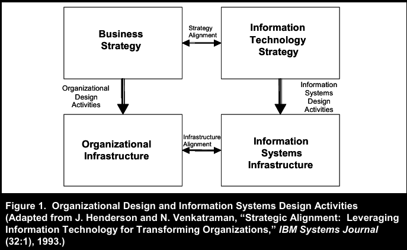
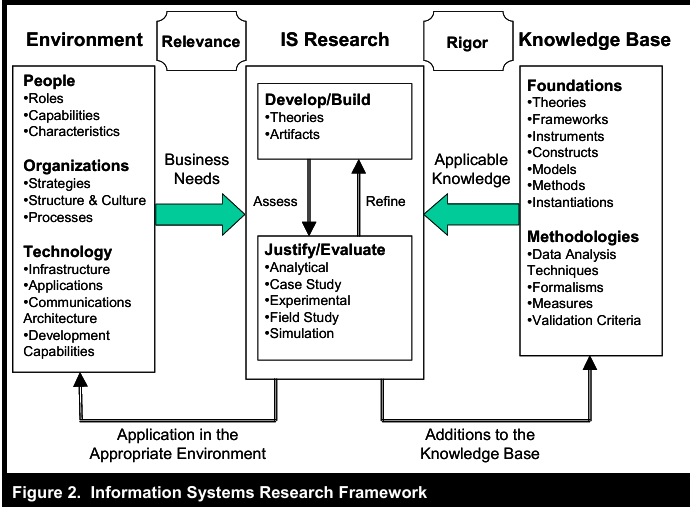
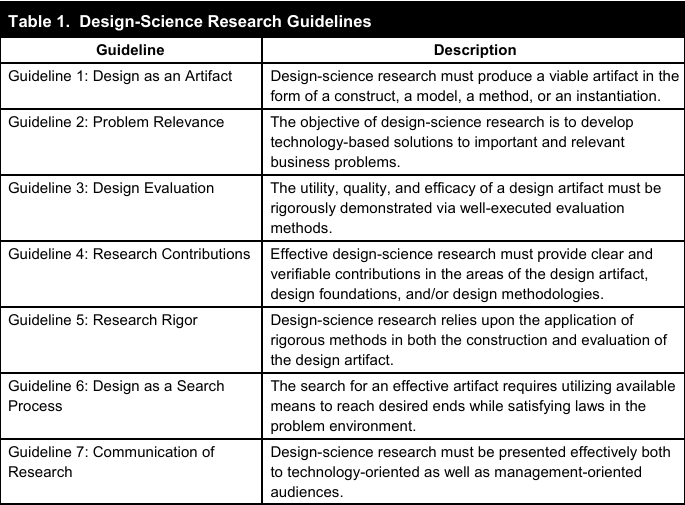
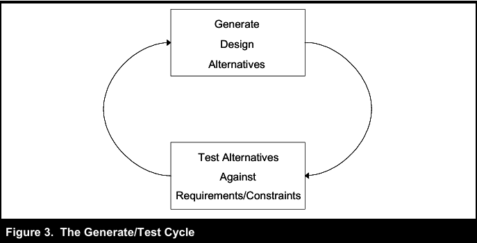
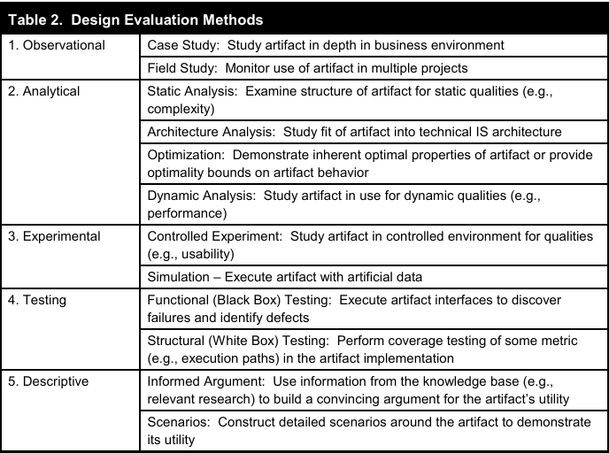

Overview
Hevner et al. argue that Information Systems (IS) research should be explicitly grounded in two complementary paradigms: behavioral science (understanding and explaining phenomena) and design science (building and evaluating solutions). Behavioral science aims for truth (validated explanations/predictions). Design science aims for utility (artifacts that solve important problems).
What the paper contributes
- A unifying IS research framework linking environment, knowledge base, and research activities (Figure 2).
- Seven guidelines defining what high-quality design-science research must address (Table 1).
- A catalog of evaluation methods matched to different artifact types (Table 2).
- A conceptualization of design as iterative search (Generate/Test) (Figure 3).
How to study this paper
- Memorize: the 7 guidelines + what evidence is expected for each.
- Internalize: the framework (Figure 2) as your mental map of IS research.
- Practice: map any design paper you read to the guidelines (artifact → evaluation → contribution).
Key concepts & keywords
| Term | Meaning in this paper |
|---|---|
| Design science | Build and evaluate IT artifacts to solve important problems and contribute to knowledge. |
| Behavioral science | Develop and test theories explaining/predicting IS-related phenomena. |
| IT artifact | Designed object embodying knowledge: constructs, models, methods, instantiations. |
| Relevance | Anchoring research in real business needs (environment-driven problems). |
| Rigor | Grounding construction/evaluation in strong theory + disciplined methods (knowledge base driven). |
| Routine design | Applying known practices to build systems; valuable practice but not automatically research. |
| Design-science research | Innovative solutions + credible evaluation + explicit contribution to knowledge base. |
| Build–evaluate loop | Iterate: build artifact → evaluate → refine; evaluation both proves utility and drives improvement. |
| Generate/Test | Design as iterative search through alternatives under constraints (Figure 3). |
Two research paradigms
Behavioral science: “What is true?”
- Goal: develop and validate theories that explain/predict IS phenomena.
- Outputs: constructs, hypotheses, causal models, empirical results.
- Validity focus: accuracy, generalizability, explanatory power.
Design science: “What is effective?”
- Goal: create artifacts that solve problems and demonstrate utility.
- Outputs: algorithms, frameworks, architectures, prototypes, methods.
- Validity focus: utility/quality/efficacy, conditions of success, tradeoffs.
What is an IT artifact?
In this paper, “artifact” is broader than “a software prototype.” Artifacts exist at multiple abstraction levels and can be reused beyond one system build.
Constructs
The vocabulary of the domain.
- Terms and symbols used to describe problems/solutions.
- Enables consistent communication and measurement.
Models
Representations that let you reason.
- Abstract descriptions of systems or solution spaces.
- Can be conceptual, graphical, or mathematical.
Methods
Procedures/algorithms for doing work.
- Algorithms, processes, design principles, “how-to” recipes.
- Often the most reusable research output.
Instantiations
Implemented artifacts demonstrating feasibility.
- Prototypes/tools/systems that embody constructs/models/methods.
- Enables strong testing and performance/usability evaluation.
Socio-technical reality
- Artifacts interact with people, incentives, and organizational process.
- Utility claims should specify context: who uses it, where, and under what constraints.
Org–IS design link (Figure 1)
Figure 1 is used to remind readers that IS design is part of broader organizational design and strategic alignment. It motivates why IS research should include design: IT is a designed intervention that shapes organizational capability.
What it means: The picture conveys that IT systems and organizational choices are intertwined. Designing IT “in isolation” can create systems that are technically fine but strategically misaligned. In IS research, design questions must consider organizational strategy, structure, processes, and constraints.
Paste Figure 1 screenshot here. Reference: MISQ p. 79; PDF “5 / 31”. Figure credit (in paper caption): adapted from Henderson & Venkatraman (1993).
IS research framework (Figure 2)
Figure 2 is the paper’s central integrative model. It links: Environment (where problems and needs arise), Knowledge base (foundations and methodologies), and IS research (build/evaluate artifacts, and theorize/test).
Environment (source of relevance)
- People: roles, skills, preferences, cognition, incentives
- Organizations: strategy, structure, culture, processes
- Technology: infrastructure, platforms, architectures, capabilities
Knowledge base (source of rigor)
- Foundations: theories, constructs, models, methods, prior artifacts
- Methodologies: evaluation techniques, metrics, data analysis, validation criteria
What it means: This diagram encodes the paper’s main message: IS research must balance relevance (environment-driven) and rigor (knowledge-base-driven). It also implies a feedback loop: evaluation results and theory development should accumulate into the knowledge base for future designs.
Paste Figure 2 screenshot here. Reference: MISQ p. 81; PDF “7 / 31”.
Routine design vs design-science research
The authors stress that “building a system” is not automatically research. Routine design applies known solutions to known problems. Design-science research must produce a novel contribution and evidence that it works—so others can verify and build on it.
Seven design-science guidelines (Table 1)
The seven guidelines are the paper’s most reusable contribution: they define what a complete design-science research study should address. They are meant to guide judgment, not to be applied mechanically.
| Guideline | Description | What you must show (evidence) |
|---|---|---|
| 1. Design as an Artifact | Produce a viable artifact (construct, model, method, instantiation). | Clear specification, scope, inputs/outputs, and how to apply/implement. |
| 2. Problem Relevance | Address important, relevant business problems with technology-based solutions. | Why it matters, stakeholders, context, and why existing solutions are insufficient. |
| 3. Design Evaluation | Demonstrate utility/quality/efficacy with well-executed evaluation. | Appropriate method(s), metrics, comparisons, and credible results. |
| 4. Research Contributions | Provide clear, verifiable contributions: artifact, foundations, and/or methodologies. | Novelty and significance; what becomes reusable knowledge for others. |
| 5. Research Rigor | Use rigorous construction and evaluation methods. | Grounding in prior theory; internal coherence; transparent methods. |
| 6. Design as a Search Process | Iteratively search for effective artifacts under constraints (means/ends/laws). | Alternatives considered, constraints, iterations, and rationale for choices. |
| 7. Communication of Research | Communicate to both technical and managerial audiences. | Actionable technical detail + managerial implications and tradeoffs. |
What it means: Table 1 is a completeness checklist for design science. It forces a paper to move beyond “we built something” by requiring relevance, explicit artifact specification, rigorous evaluation, clear contribution, disciplined methods, an iteration/search narrative, and multi-audience communication.
Paste Table 1 screenshot here (optional). Reference: MISQ p. 83; PDF “9 / 31”.
G1 — Design as an Artifact
You must produce a viable artifact. Viable means it is specified enough to be implemented/applied and evaluated—not just proposed.
What a strong artifact description includes
- Type: construct/model/method/instantiation (state it explicitly).
- Purpose: the task/problem it solves (ties directly to G2).
- Inputs/outputs: what it consumes and produces.
- Assumptions & boundaries: conditions of validity; what it does not address.
- Representation: diagrams, pseudo-code, formal definitions, interfaces, architecture.
G2 — Problem Relevance
Design science must address an important business problem. Relevance is argued, not assumed. You should be able to answer: “Who cares, and why does it matter now?”
How to argue relevance
- Define the decision/task the artifact improves (not just the domain).
- Identify stakeholders/constituents and the cost of the problem (time, money, risk, missed opportunity).
- Explain why current approaches are insufficient (limitations, poor tradeoffs, missing capabilities).
- Make the environment constraints explicit (data, policy, workflow, budget, adoption barriers).
G3 — Design Evaluation
You must demonstrate the artifact’s utility, quality, and efficacy. Evaluation is essential for credibility and for improving the design through iteration.
Evaluation must match your claims
- Performance/scalability claims: benchmarks, performance modeling, simulation, field measurements.
- Decision-quality claims: controlled experiments or field studies comparing outcomes to baselines.
- Correctness/security claims: formal proofs + robust testing.
- Usability claims: controlled usability studies, task success, time, errors, satisfaction.
G4 — Research Contributions
A design-science paper must make a clear, verifiable contribution: the artifact itself and/or new design foundations and/or new design methodologies.
Artifact contribution
- New algorithm, architecture, language, framework, method, or tool.
- Must be described so it can be reused/extended.
Foundation contribution
- New constructs, design principles, or design theory.
- Often: combining kernel theory + design principles into a coherent basis.
Methodology contribution
- New evaluation method, measurement framework, or build process that improves design science practice.
G5 — Research Rigor
Rigor means disciplined grounding and execution in both construction and evaluation. It is not “more math”; it is “more defensible reasoning and method.”
How rigor appears
- Grounding: explicit use of prior theory and validated methods from the knowledge base.
- Precision: unambiguous definitions, consistent specification/architecture.
- Transparency: evaluation procedure, metrics, assumptions, limitations, and threats to validity.
G6 — Design as a Search Process (Figure 3)
The paper adopts “problem solving as search”: you explore alternatives under constraints until you find a design that satisfies goals well enough. Many IS problems are too complex for closed-form optimality; thus iterative search and heuristic improvement are normal.
Means, ends, laws
- Means: choices/resources you control (design parameters, algorithms, data, architecture).
- Ends: goals + constraints (requirements, target utility, performance thresholds).
- Laws: constraints you can’t change (platform limits, budgets, organizational policies, physics).
What it means: Design proceeds by iterating: generate candidate designs → test them against constraints/requirements → refine and repeat. The key message is that design knowledge is created through this build–evaluate loop, and a good paper should describe the alternatives considered and why the final design was selected.
Paste Figure 3 screenshot here. Reference: MISQ p. 89; PDF “15 / 31”.
G7 — Communication of Research
Design-science research must speak to two audiences: technology-oriented and management-oriented. Strong work communicates both how to build/use the artifact and why it matters for decisions and outcomes.
Technical audience
- Artifact specification: algorithms, architectures, interfaces, pseudo-code.
- Evaluation detail: datasets, metrics, experimental design, proofs, tests.
- Reusability: what others can implement/extend.
Managerial audience
- Business motivation: impact, risk, cost, opportunity.
- Tradeoffs: cost/benefit, adoption requirements, limitations.
- Action: what decision makers should do differently.
Evaluation methods (Table 2)
The paper provides a menu of evaluation methods across five categories. The underlying message: choose evaluation that matches your artifact and the claims you make.
| Category | Methods (from Table 2) | What it demonstrates (typical evidence/metrics) |
|---|---|---|
| Observational | Case study, Field study | Real-world utility and fit. Evidence: adoption/use, process outcomes, decision quality, time/cost reduction, qualitative fit. |
| Analytical | Static analysis, Architecture analysis, Optimization, Dynamic analysis | Formal properties. Evidence: correctness, complexity bounds, architectural fit, stability/scalability reasoning, performance modeling. |
| Experimental | Controlled experiment, Simulation | Causal/comparative evidence. Evidence: outcomes vs baseline, sensitivity analyses, controlled task measures, load/performance experiments. |
| Testing | Functional (black-box), Structural (white-box) | Implementation correctness/robustness. Evidence: test pass rates, coverage, defect discovery, fault tolerance. |
| Descriptive | Informed argument, Scenarios | Early plausibility. Evidence: logic grounded in knowledge base; scenario walkthroughs. (Weaker unless other methods are infeasible.) |
What it means: Table 2 is a “proof toolbox.” It emphasizes that evaluation is not optional and not one-size-fits-all. Strong design-science claims require methods that can credibly validate (or falsify) the claim.
Paste Table 2 screenshot here (optional). Reference: MISQ p. 86; PDF “12 / 31”.
Wicked problems in IS design
Many IS design problems are “wicked”: requirements shift, constraints conflict, and success depends on human behavior and organizational context. This is why design science emphasizes iteration and evaluation rather than “one-shot” optimal solutions.
- Design is rarely a closed-form optimization; it is iterative and adaptive.
- Evaluation is harder because environments change and controlled comparisons can be difficult.
- Artifacts are interventions that interact with incentives, culture, and workflow—not just code.
Exemplars: applying the guidelines
The paper reviews exemplar studies to show that different artifacts can still be strong design science if they clearly specify the artifact, choose appropriate evaluation, and make verifiable contributions.
Exemplar A — Anonymity mechanisms in GDSS (Gavish & Gerdes)
Artifact: procedural anonymity mechanisms implemented via protocol/architecture changes (e.g., encryption, header removal, re-encryption, randomization, dummy messages).
Rigor: grounded in cryptography/protocol foundations; includes formal proofs.
Evaluation: proofs + cost–benefit analysis; limited/no field instantiation evidence in the example as discussed.
Exemplar B — XRL workflow language (van der Aalst & Kumar)
Rigor: Petri-net foundations enable formal analysis; constructs mapped to formal representations.
Evaluation: examples + prototype; analytic grounding supports verifiability claims.
Exemplar C — TOP Modeler for emergent knowledge processes (Markus et al.)
Artifact: TOP Modeler tool + related design principles; developed with major firms.
Evaluation: iterative prototyping and usage observations; limited formal comparative evaluation due to lack of comparable alternatives (as discussed).
Challenges & implications
The authors highlight challenges for design-science research in IS, especially given rapid technological change and socio-technical complexity.
- Inadequate cumulative theory base for IS as an engineering discipline.
- Representation gap: abstract models may lose relevance; informal models may lose rigor.
- Insufficient knowledge base in new domains → reliance on intuition/trial-and-error and iterative prototyping.
- Perishability: tech change can outpace research cycles and reduce practical payoff.
- Evaluation difficulty: rigorous evaluation in real environments can be expensive and hard to generalize.
Practical checklist (use to study, write, or review)
- Artifact (G1): What exactly is built? How is it specified? How can someone implement/use it?
- Relevance (G2): What real problem? Who are the stakeholders? Why do current solutions fail?
- Evaluation (G3): What evidence proves utility/quality? Which Table 2 methods fit?
- Contribution (G4): What is new? Artifact vs foundations vs methodology? Why does it matter?
- Rigor (G5): What kernel theories/methods ground the work? Are definitions and methods disciplined?
- Search (G6): What alternatives were explored? What constraints shaped choices? What iterations occurred?
- Communication (G7): What should engineers build from this? What should managers decide from this?
Credits & references
Primary source: Hevner, A. R., March, S. T., Park, J., & Ram, S. (2004). Design Science in Information Systems Research. MIS Quarterly, 28(1), 75–105.
Figure credit noted in the paper: Figure 1 is adapted from Henderson & Venkatraman (1993) (as stated in the figure caption). These notes are a study companion; conceptual credit belongs to the paper’s authors and cited prior work.
Quick index (where to grab images)
| Item | Paper page (MISQ) | PDF page indicator |
|---|---|---|
| Figure 1 | 79 | PDF “5 / 31” |
| Figure 2 | 81 | PDF “7 / 31” |
| Table 1 | 83 | PDF “9 / 31” |
| Table 2 | 86 | PDF “12 / 31” |
| Figure 3 | 89 | PDF “15 / 31” |